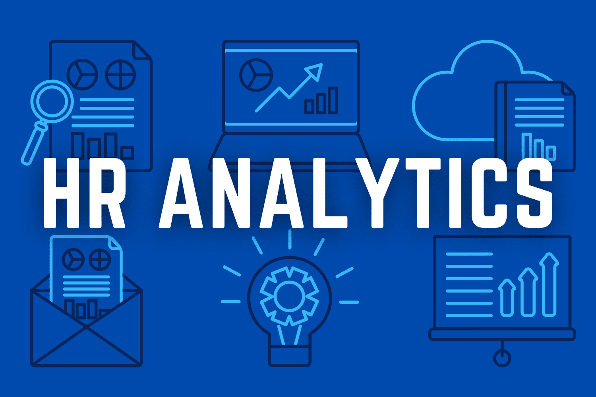
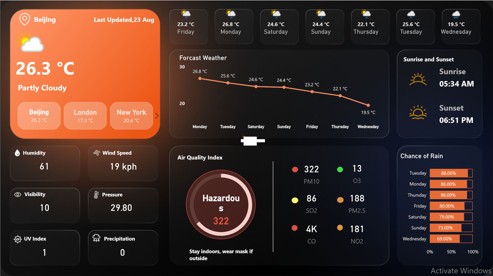

This project analyzes how screen time consumption affects mental wellness indicators, using a dataset of 400 participants. The analysis combines statistical testing, clustering, and predictive modeling to uncover patterns and build actionable insights.
This analysis examines customer purchasing behavior from a UK-based online retail dataset using RFM analysis and K-Means clustering. The analysis identifies distinct customer segments that can be targeted with differentiated marketing strategies to improve customer retention and increase revenue.
This project analyzes user churn behavior for Spotify. The goal is to predict which users are likely to churn based on user demographics, listening habits, subscription types, and device usage. The insights and predictive models can help Spotify improve user retention by targeting at-risk users.
This project aims to analyze and predict product sales on Temu, a leading e-commerce platform. The analysis covers sales patterns, price sensitivity, product ratings, reviews, and revenue impact. Machine learning models are applied to predict sales and explain key drivers using SHAP values.
A comprehensive analysis exploring the relationships between Environmental, Social, and Governance (ESG) factors and financial performance across 1,000 companies from 2015 to 2025.

Analyzed advertising performance on Facebook and Google AdWords to identify which platform delivers higher conversions and cost-effectiveness.

This project analyzes health indicators to predict diabetes risk and identify key factors contributing to diabetes prevalence. The analysis includes exploratory data analysis, statistical testing, feature engineering, and multiple machine learning models with a focus on handling class imbalance.

A comprehensive analysis of employee data to understand workforce dynamics, turnover patterns, and performance metrics.

This analysis examines the Netflix movies and TV shows to understand the distribution of content types, ratings, genres, and geographic distribution. The analysis also explores trends over time and identifies the most common directors and actors. The insights can help in content strategy and acquisition decisions.

A dynamic and interactive Power BI dashboard that visualizes real-time and historical weather data fetched from the WeatherAPI service. This project demonstrates how to seamlessly integrate an external API into Power BI for powerful data analytics.